영월고향방앗간 홈페이지 구축 시안 (Draft 02)
1. 프로젝트 개요
홈페이지 구축 배경 및 목적
참기름/들기름 시장은 대부분 브랜드 간의 차별성이 약하여, 소비자가 단순 가격 비교를 통해 구매를 결정하는 경향이 있습니다. 영월고향방앗간은 이러한 문제를 해결하고 단순한
'기름'이 아닌 영월고향방앗간만의 브랜드 가치와 신뢰를 함께 전달하기 위해 기획되었습니다.
- 브랜드 신뢰도 확보 및 가치 전달: 진정성 있는 브랜드 스토리텔링을 통해 가격 저항을 낮춥니다.
- 타겟 맞춤형 UX: 50-60대 주 고객층을 배려한 시원한 폰트 크기, 명확한 대비, 그리고 밝고 우아한 인터페이스를 제공합니다.
- 프리미엄 이미지 구축: 전통의 느낌을 살리되, 낡은 느낌이 아닌 '고급 백화점 식품관'에 입점할 만한 현대적이고 세련된 디자인을 지향합니다.
본 시안의 목적
본 시안(draft_02)은 이전 draft_01의 리뷰 결과를 반영하여 시각적 방향성을 완전히 재정립하고, 커머스 기능(상세/장바구니/로그인)까지 모두
포함한 최종 합의용 프로토타입입니다.
2. 사이트맵 & 유저 플로우
사이트맵 (Sitemap)
직관적이고 단순한 구조를 통해 타겟 고객이 길을 잃지 않도록 4개의 메인 메뉴로 압축했습니다.
HOME (영월고향방앗간)
├── 브랜드 소개 (brand.html)
├── 생산과정 (process.html)
├── 상품보기 (products.html)
│ └── 상품 상세 (product-detail.html) [NEW]
├── 장바구니 (cart.html) [NEW]
└── 로그인/회원가입 (login.html) [NEW]
사용자 흐름 (User Flow)
브랜드 철학에 설득되어 자연스럽게 장바구니로 이어지도록 설계된 동선입니다.
광고/SNS ➡️ 메인 홈 ➡️ 브랜드 소개/생산과정 ➡️ 상품목록 ➡️
상세페이지 ➡️ 장바구니 ➡️ 로그인/결제
3. 디자인 및 기획 의도 (Draft 02)
전체 톤 앤 매너 (Tone & Manner)
- Celadon & Hanji (청자와 한지): 칙칙한 다크톤을 버리고, 맑고 깊은 청자빛(
Deep Celadon)과 눈이 편안한 한지
화이트(Hanji White)를 베이스로 채택했습니다. 화사하면서도 가볍지 않은 한국적 우아함을 전달합니다.
- 디자인 밀도 (Density): 휑해 보일 수 있는 여백을 무의미한 아이콘으로 채우는 대신, 섹션별 배경색 교차 적용과 정보가 꽉 찬 확장형 푸터(Footer)를
통해 레이아웃의 완성도와 밀도를 높였습니다.
UX 핵심 요약 (Design & UX Key Points)
- 타겟 친화적 가독성 및 안정감: 포인트 컬러의 명도/채도를 조절해 눈을 편안하게 하고, 요소들의 크기와 여백을 치밀하게 계산(다이어트)하여 넓은 모니터에서도 화면이
붕 뜨지 않는 '단단하고 안정적인' 레이아웃을 구현했습니다.
- Glassmorphism 적용: 메인 히어로 배너 영역에 반투명한 블러(Backdrop-filter) 효과를 주어, 뒷배경의 자연 이미지와 텍스트가 고급스럽게
어우러지도록 설계했습니다.
- 매거진 스타일의 스토리텔링: 텍스트와 이미지가 교차하는 지그재그(Zig-zag) 레이아웃과 고대비(High Contrast) 다크 섹션을 적절히 믹스하여, 긴
브랜드 스토리도 지루함 없이 집중력 있게 읽힐 수 있도록 유도했습니다.
- 동적 커머스 경험(Dynamic UX): 프론트엔드 단에서 로컬 스토리지를 활용한 실시간 장바구니 뱃지 카운팅, 자동 금액 계산 및 수량 조절 기능을 연동하여,
단순한 뷰어(Viewer)를 넘어 실제 이커머스 서비스와 동일한 쇼핑 경험을 제공합니다.
4. 향후 개발 및 적용 계획
본 시안(Draft 02) 확정 이후, 다음과 같은 고도화 작업 및 실제 구축 단계가 진행될 예정입니다.
디자인 및 퍼블리싱
- 실제 제품 촬영: 현재 임시로 사용된 이미지를 실제 패키지 촬영본으로 교체.
- 반응형 디버깅: 다양한 스마트폰 기기(아이폰, 갤럭시 폴드 등)에서의 미세 렌더링 조정.
백엔드 및 기능 개발
- 결제 시스템 연동: 신용카드, 네이버페이, 카카오페이 등 PG사 결제 모듈 연동.
- 회원 시스템: 소셜 간편 로그인(카카오톡 연동 필수) 및 비회원 주문 배송 조회 기능.
- 관리자 백오피스: 상품 등록, 재고 관리, 발주 및 고객 응대를 위한 Admin 페이지 구축.
마케팅 및 SEO
- 검색 엔진 최적화: 구글 및 네이버 검색 최적화(SEO)를 위한 메타 태그 및 구조화 데이터 세팅.
- 카카오톡 채널 연동: 구매 전환 및 알림톡 발송을 위한 카카오톡 비즈니스 채널 연동.
5. 주요 화면 시안 (Screenshots)
5.1. Main Home (메인 홈)
PC 화면 (1920px)
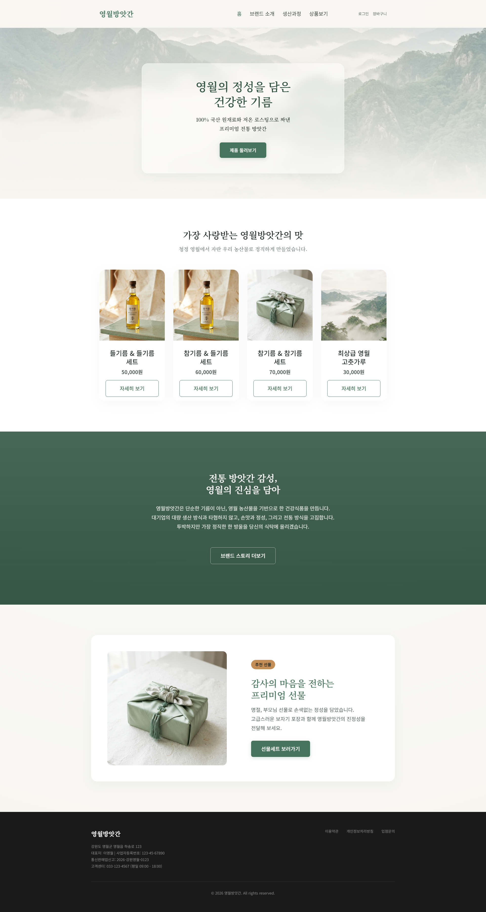
모바일 화면 (375px)
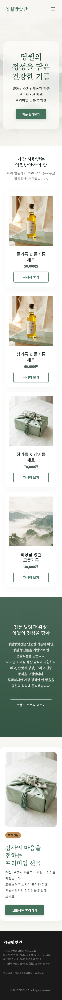
5.2. Brand Story (브랜드 소개)
PC 화면 (1920px)
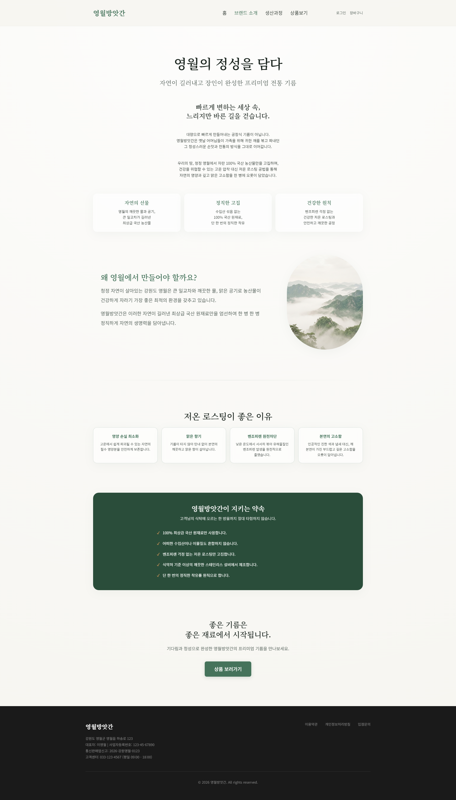
모바일 화면 (375px)
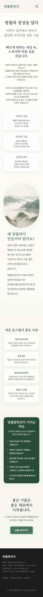
5.3. Process (생산 과정)
PC 화면 (1920px)
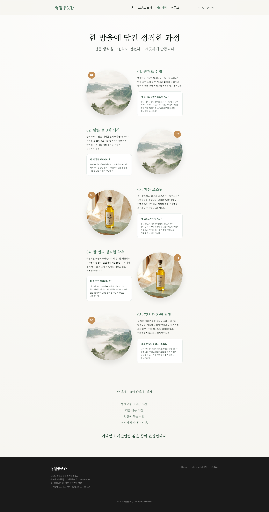
모바일 화면 (375px)
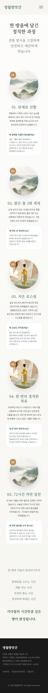
5.4. Products (상품 보기)
PC 화면 (1920px)
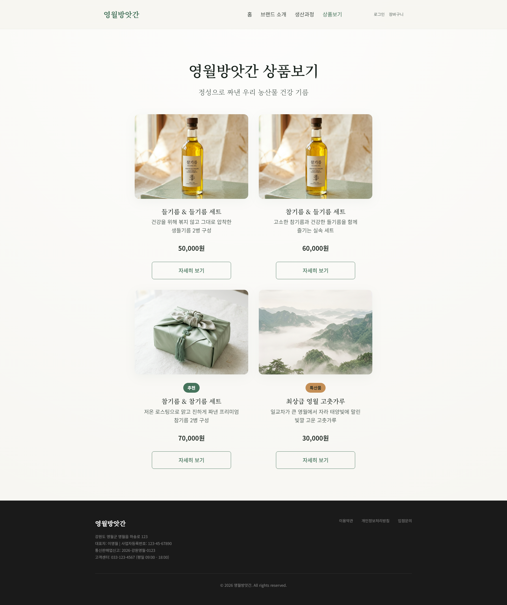
모바일 화면 (375px)
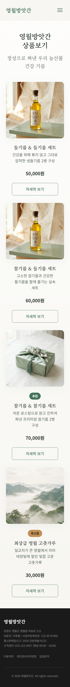
5.5. Product Detail (상품 상세)
PC 화면 (1920px)
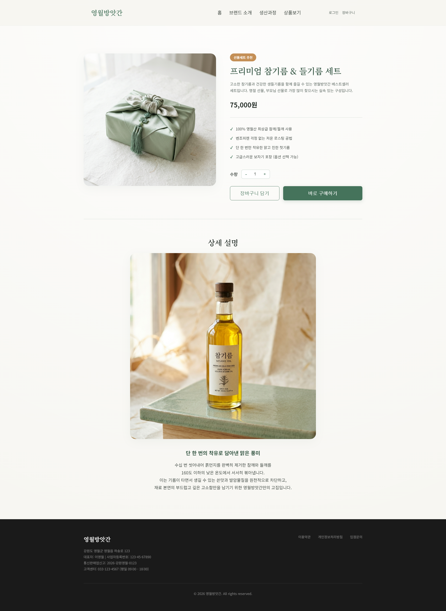
모바일 화면 (375px)
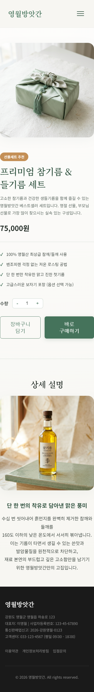
5.6. Cart (장바구니)
PC 화면 (1920px)
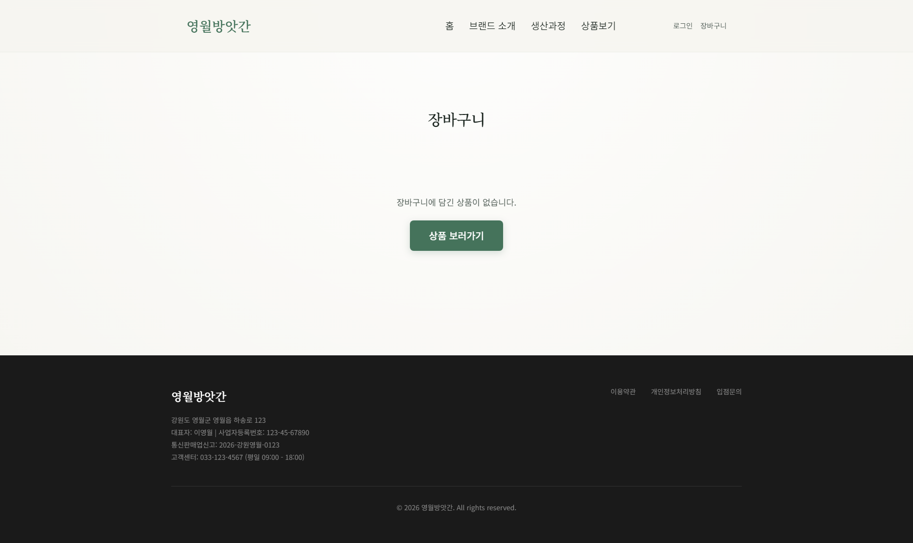
모바일 화면 (375px)
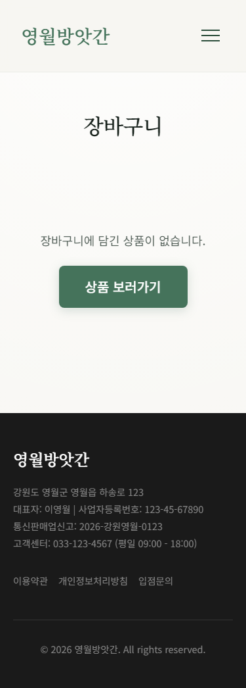
5.7. Login (로그인)
PC 화면 (1920px)
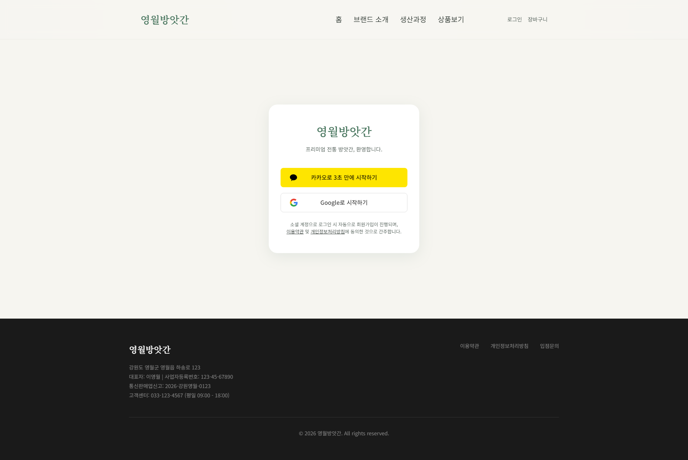
모바일 화면 (375px)
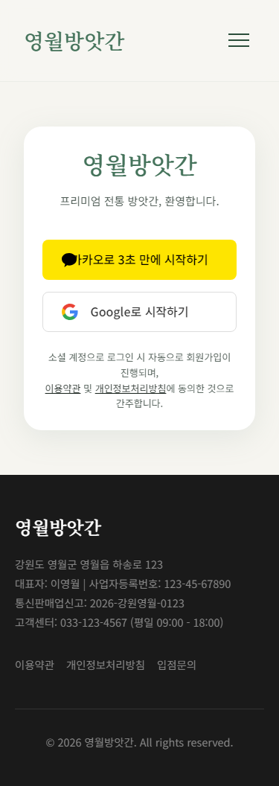